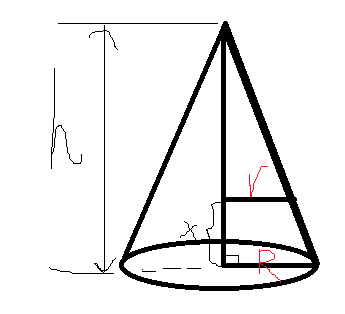

§2.4 隐函数与参数方程求导
一、隐函数求导
引入：
- y=ex,y=2x2+1,y=sinx （显函数）
- siny+ey−x=0（隐函数）
定义：隐函数F(x,y)=0→显函数y=f(x)
例题
- siny+ey−x=0，求 y′,y′′
解：两边关于 x 求导（复合导数）
cosy⋅y′+ey⋅y′−1y′y′′=0=cosy+ey1=dxd(cosy+ey1)=−(cosy+ey)2−siny⋅y′+ey⋅y′=−(cosy+ey)3−siny+ey=(cosy+ey)3siny−ey
- 求 16x2+9y2=1 在 (2,233) 的切线方程

解：两边关于 x 求导
162x+92y⋅y′162×2+92×233y′∣x=2k=y′∣x=2∴l:y−233=0=0=−43=−43(x−2)
- y=(ba)x(xb)a(ax)b,a>0,b>0,ba=1，求 y′
解
法一：
y′=(ba)xln(ba)(xb)a(ax)b+(ba)xa(xb)a−1(−x2b)(ax)b+(ba)x(xb)ab(ax)b−1a1=ax−bba−xxb−aln(ba)+ax+1−bba−xxb−a−1+ax−bba+1−xxb−a−1
法二（对数求导法）：
lny=xln(ba)+aln(xb)+bln(ax)=xln(ba)+a(lnb−lnx)+b(lnx−lna)
y1⋅y′=lnba−xa+xb
y′=y⋅(lnba+xb−a)=ax−bba−xxb−a(lnba+xb−a)
二、参数函数求导
y=f(x)F(x,y)=0
- 定理：{x=ϕ(t)y=ψ(t) ，t 是参数，ϕ(t) 、ψ(t) 可导，x=ϕ(t) 可确定反函数 t=ϕ−1(x)，则 dxdy=dtdxdtdy=ϕ′(t)ψ′(t)
dx2d2y=[ϕ′(t)]3ψ′′(t)ϕ′(t)−ϕ′′(t)ψ′(t)
例题
- {x=3e−ty=2et ，求 dx2d2y
解：
dxdy=−3e−t2et=−32e2t
dx2d2y=dxd(−32e2t)=−34e2t⋅−3e−t1=94e3t
- {x=f′(t)y=tf′(t)−f(t) ，且 f(2)(x)=0 ，求 dx2d2y
解：
dxdy=f′′(t)f′(t)+tf′′(t)−f′(t)=t
dx2d2y=dtdxdtd(dxdy)=f(2)(t)1
- 求 r=eaθ 在 θ=2π 处的切线方程
解：
{x=ρcosθ=eaθcosθy=ρsinθ=eaθsinθ
k=dxdy∣θ=2π=−a
l:y−e2πa=−ax 即 y+ax=e2πa
- {x=t2+2tt2−y+εsiny=1(0<ε<1)，求 y 对 x 的导数
解：
dxdy=dtdxdtdy=2t+21−εcosy2t=(1+t)(1−εcosy)t
三、相关变化率
设 x=x(t) 及 y=y(t) 都是可导函数，而变量 x 与 y 之间存在某种关系，从而变化率 dtdx 与 dtdy 间也存在一定关系。这两个相互依赖的变化率称为相关变化率。
例题
- 圆的半径 r 以 2cm/s 速度匀速增加，求圆面积 S 在 r=10cm 时的增加速度。
解：
dtdrdtdS=drdS=2πr
dtdS∣r=10=2π×10×2=40π(cm/s2)
- 圆锥形容器以 25cm3/s 速度注水，当容器中的水位位于 2h 时，求此时水位的上升速度。

解：
由相似关系得 Rr=hh−x
V=31πR2h−31πr2(h−x)=31πR2h−31π(hR)2(h−x)3
两边关于 t 求导得
dtdV=0−31π(hR)2⋅3(h−x)2⋅(−1)⋅dtdx
∴dtdx∣x=2h=πh2100(cm/s2)